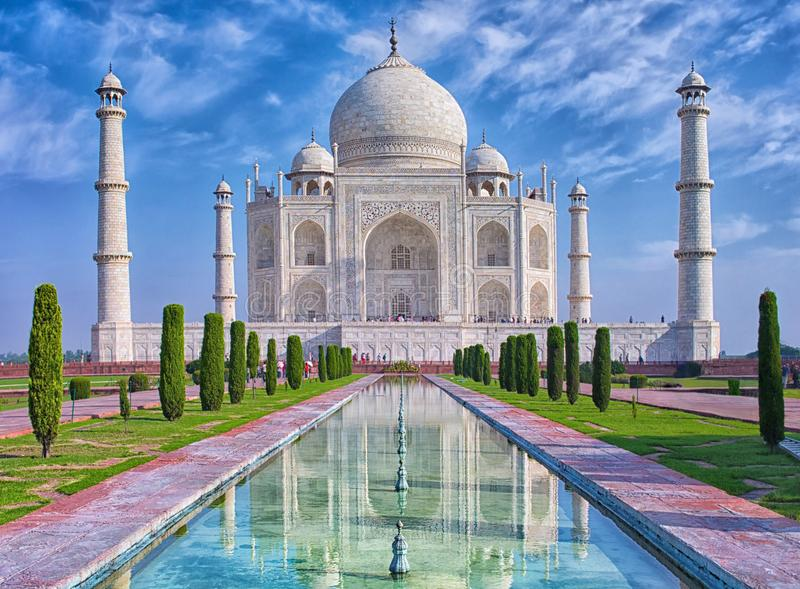

The Taj Mahal of Agra is one of the Seven Wonders of the World, for reasons more than just looking
magnificent. It's the history of Taj Mahal that adds a soul to its magnificence: a soul that is filled with
love, loss, remorse, and love again. Because if it was not for love, the world would have been robbed of
a fine example upon which people base their relationships. An example of how deeply a man loved his wife,
that even after she remained but a memory, he made sure that this memory would never fade away.
This man was the Mughal Emperor Shah Jahan, who was head-over-heels in love with Mumtaz Mahal, his dear wife.
She was a Muslim Persian princess (her name Arjumand Banu Begum before marriage) and he was the son of the
Mughal Emperor Jehangir and grandson of Akbar the Great. It was at the age of 14 that he met Mumtaz and
fell in love with her. Five years later in the year 1612, they got married.

Shah Jahan, his name along with the name of his wife Mumtaz Mahal, being synonymous with the existence
and ever growing popularity of Taj Mahal, was a Mughal Emperor of the Southern Asia who reigned from
1627 to 1658. Born as Prince Shihab-ud-din Muhammad Khurram in the Lahore, Pakistan of 1592, Shah Jahan
was the son of Emperor Jahangir. His name Khurram, which means "joyful" in Persian, was given to him by his
grandfather Akbar the Great. Displaying great military skills at an early age against numerous enemies including
Mewar, the Lodi in the Deccan, and Kangra, impressed his father so much that Shah Jahan received the title
"Shah Jahan Bahadur" from him. He wasn't just a sharp military leader, but also had an exceptional talent for
building and proved it by re-designing buildings within the Agra fort. Among many titles he had earned,
"The Builder of the Marvels" was one that was about to be proved the most deserving in the time to come.
The most significant part of Shah Jahan's life history began in 1607 when he was 15 and was betrothed to
Arjumand Banu Begum, the granddaughter of a Persian noble and was just 14 at that time. After they got married
in 1612, Arjumand became the unquestioned love of his life.
Mumtaz Mahal was a princess from the Persian nobility. She was the daughter of Abdul Hasan Asaf Khan.
She was born in Agra in 1593 and met the future young Mughal emperor while he was still Prince Khurram.
The latter, falling under the spell of its beauty, was quickly engaged in 1607. It must be said that
the chroniclers of the time tells us that it was a couple in perfect harmony, very much in love with
one another. the other. The wedding was celebrated in 1612, 5 years later. From there began one of the
greatest love story we know, the popularity of Taj Mahal requires. Although she was one of Shah Jahan's
three wives (already married twice previously), she was his favorite. He even gave her the name Mumtaz Mahal,
which means "The jewel of the palace".
Throughout her short life Mumtaz Mahal was very close to her husband. She was his trusted companion and
traveled with him throughout the Mughal Empire, which was not the case with the two other wives,
Akbarabadi Mahal and Kandahari Mahal, with whom the emperor had simpler, less passionate relationships.